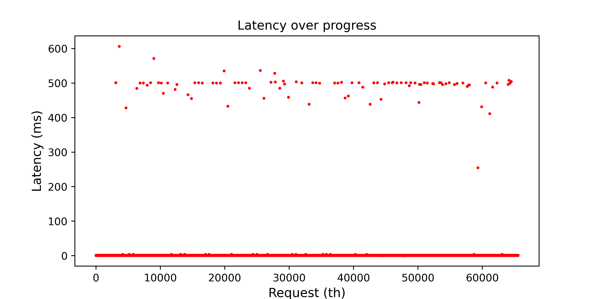

Task: Read Paper, Implement and Evaluate FAST
Lee, S. W., Park, D. J., Chung, T. S., Lee, D. H., Park, S., & Song, H. J. (2007). A log buffer-based flash translation layer using fully-associative sector translation. ACM Transactions on Embedded Computing Systems (TECS), 6(3), 18-es.
The task in this project is to read the paper cited above, implement the FAST hybrid-level mapping scheme in SimpleSSD, and evaluate it.
FAST mapping scheme: a brief introdution
The FAST scheme leverages a hybrid-level mapping, which divides the physical blocks into data blocks and log blocks.
The data blocks use block-level mapping. That is, when it maps a page with LPN (= LBN * pagePerBlock + PageOffset), the mapping table records only LBN-PBN mapping pairs. The PageOffset remains unchanged during the mapping.
The log blocks use page-level mapping. The mapping table records LPN-PPN pairs, and the PageOffset of the LPN and PPN can be different.
Further more, FAST divides log blocks into Sequential Write Block and Random Write Blocks. The entire system contains a single SW block. It is used to buffer sequential writes. It also leverages block-level mapping, so when it is merged with data blocks, there is possibility to eliminate operations to speed up the merging. RW blocks uses page-level mapping, and the total number of RW blocks are constrained (set to 6 in this project).
There are four types of operation in FAST:
- Read. When reading a page, FAST first checks if any log block (SW or RW block) contains this page. If so, it reads the page from the block. Otherwise, it finds the data block by mapping the LBN to PBN. If there exist a data block that maps to the LBN, and the physical page on Page Offset is valid, FAST reads the page from it.
- Write. When writing a page, FAST first checks if the corresponding physical page, i.e., PBN * pagePerBlock + PageOffset, is free (hasn't been written since last erase). If so, FAST writes the page to it. If not, then FAST writes it to a log block. Firstly, it checks whether this is a sequential write by checking two conditions: (1) PageOffset is 0, no matter what LBN; (2) the LBN is equal to the LBN of current SW block, and the PageOffset is exactly the first free physical page of the SW block (for example, SW block = [0, 1, free, free], writting page 2). If this is a sequential write, FAST writes the page to SW block. Specially, under condition (1), if the write LBN is not the LBN of SW block, the SW block should be merged first. If this is not a sequential write, FAST finds a non-full RW block and writes the page to the first free page of it.
- SW block merge. "Merge" is the operation that transforms a log block and a few corresponding data blocks into new data blocks and erases these old blocks. When a write with PageOffset == 0 comes, but the LBN is not the current LBN of SW block, FAST merges the SW block first. There are two conditions: (1) the SW block is full of valid pages. Under this condition, the SW block can be "switched" to a data block. FAST finds the old data block of this LBN, modifies the mapping table to let the LBN maps to current SW block, and erase the old data block into a new free block. (2) The SW block is not full. Under this condition, FAST finds the old data block of this LBN, reads all valid pages from the data and SW blocks, allocates a new free block as new data block, writes the valid pages to the new data block, and erases the old data and SW blocks. After both conditions, FAST allocates a free block as the new SW block.
- RW block merge. When all RW blocks are full (with valid and invalid pages, no more free page), FAST choose a victim RW block to be merged. A RW block may contains logical pages that belong to different logical blocks. FAST first finds all related LBNs of the LPNs in the victim block. Then, it reads all valid pages that belong to these LBNs from all RW blocks and corresponding data blocks (will scan RW blocks, but check the mapping table to find the data blocks to read). It then allocates multiple free blocks for these LBNs, one for each, and write the valid pages to them. Lastly, it erases the old data blocks and the victim block, then allocates a new free RW block.
Provided contents in code package
We've provided a few contents in the code package for your convenience (you can download the package from PKU Disk):
config/simulation_sample.cfg: A sample configuration file.config/<trace name>.cfg: Four configuration files that configure the program to run on the traces.simplessd/config/ssd_sample.cfg: A sample configuration file.simplessd/config/<base/fast>.cfg: Two configuration files that configure the pragram to run with base mapping (PageMapping) and fast mapping.traces/: Four traces from FIU and one simple trace with 6 requests.compile: A bash script that calls CMake to setup and compile simplessd. It will compile in both release mode and debug mode.test: A bash script that automatically simulates the four traces with base/fast mapping. You can run this script in background (./test &). It may take ~10 minutes to complete.plot.py, plot: Python and bash scripts that draw the latency plots for each setting, based on latency log outputlatency.csv. You can also open the CSV files in Excel and draw the plot. Note that the other log outputs (log.txtanddebug.txt) can be very large, you can modify the configuration files, empty the corresponding fields to turn the log off.simplessd/ftl/fast.hh, simplessd/ftl/fast.cc: Code skeleton. You can only work under these two files.
Code skeleton
We've provide a detailed code skeleton for you. Basically, fast.hh defines all the classes and interfaces. There are six functions that require you to complete in fast.cc (You can search for TODO: Lab4 to see the exact location):
void invalidateOldPage(LBN lbn, POff offset);
std::pair<PBN, POff> findPageInRWBlocks(LPN lpn);
bool findPageInSWBlock(LBN lbn, POff offset);
PBN findPageInDataBlocks(LBN lbn, POff offset);
bool pageIsFreeInDataBlock(LBN lbn, POff offset);
bool canWriteToSWBlockAfterMerge(LBN lbn, POff offset, uint64_t &tick,
bool sendToPAL);
std::pair<PBN, POff> findFreePageInRWBlocks(uint64_t &tick, bool sendToPAL);
Others are already implemented. You can check the comments for the detailed description. You are not required to simulate the DRAM access latency in this project for simplicity.
The interfaces in SimpleSSD leverage a unique implementation to simulate the latency of each request. Basically, The request is passed from the top to the bottom by a serial of interfaces like read and write. Each interface receive a reference to a variable, namely uint64_t &tick. The interfaces modify this variable directly when there is a new latency component, like tick += applyLatency(CPU::FTL__PAGE_MAPPING, CPU::READ_INTERNAL);. They can also pass this variable to other interfaces to gather the latency of next layer, like pPAL->read(palRequest, tick);. You can use this method to implement FAST.
Desired outputs
Compared to PageMapping, your implementation of FAST should exhibits latency spikes that are much higher than the average latency. The latency plots can be like this:
